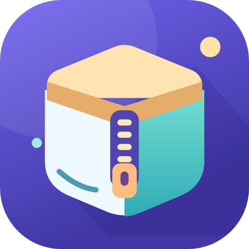
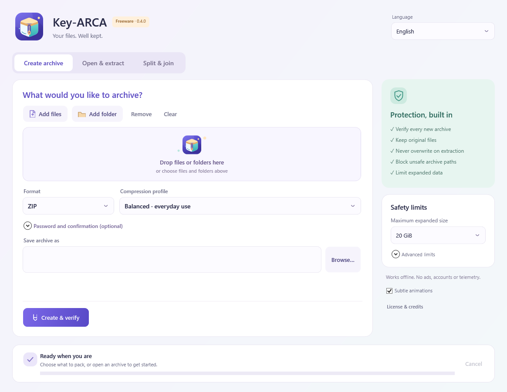

A format for the task
Create ZIP and 7z archives with simple compression profiles. Explore ARCA for text, code and repeated content.
- Create, preview, verify and extract
- Drag files and folders into the window
- Fast, balanced and smaller profiles

Key-ARCAPack, protect and unpack your files with a clear, friendly archiver. ZIP, 7z and an experimental format for trying something new.
v0.2.1 preview · Windows x64 · Portable ZIP

Keep the familiar formats, choose how much to compress and let the application check the result before saving your new archive.
Create ZIP and 7z archives with simple compression profiles. Explore ARCA for text, code and repeated content.
New archives are verified before being committed. Extraction uses a fresh folder and checks archive paths and expansion limits.
Preview contents before extracting. Choose your language and use the same clear controls across the supported formats.
The portable package includes the .NET runtime. A separate .NET installation is not required.
All release assets & SHA-256 checksum ↗Choose Key-ARCA-0.2.1-win-x64.zip from the release assets. The package targets Windows 10/11 x64.
Right-click the ZIP and choose Extract All. Keep the application, DLLs, language files and licenses together.
Choose files to archive, or open a ZIP, 7z or ARCA archive. To update later, extract the new release into a separate folder.
A small preview, with clear boundaries.
Have a question or found a bug?
FFFNewsNow@gmail.com
Yes. The application is freeware for personal, educational and commercial use, with no trial expiration. The original application source is proprietary. Third-party components retain their own license rights. Read the freeware license and the notices included in the download.
ARCA is an experimental .arca container using content deduplication and several compression methods. It does not consistently produce smaller files than optimized 7z. Keep your originals or independent backups. See the format notes and complete compression measurements.
ZIP, 7z and ARCA archives. RAR and ISO extraction, split/join volumes and damaged-archive repair are not available in this version.
Encryption is optional. 7z and ARCA can protect file names as well as contents; ZIP file names remain visible. New passwords require at least 12 characters. ZIP passwords use printable ASCII with the current engine; 7z and ARCA support Unicode passwords.
The default expanded-size limit is 20 GiB, with presets up to 50 GiB. The application also limits entry counts, path depth, expansion ratio and worker resources. These are archive-processing checks; Key-ARCA is not a malware scanner. See the full preview limitations.
The application works offline and has no runtime network calls, account system, ads or telemetry. Files selected for archiving stay on your computer. Downloads are hosted by GitHub; this website is hosted by GitHub Pages.